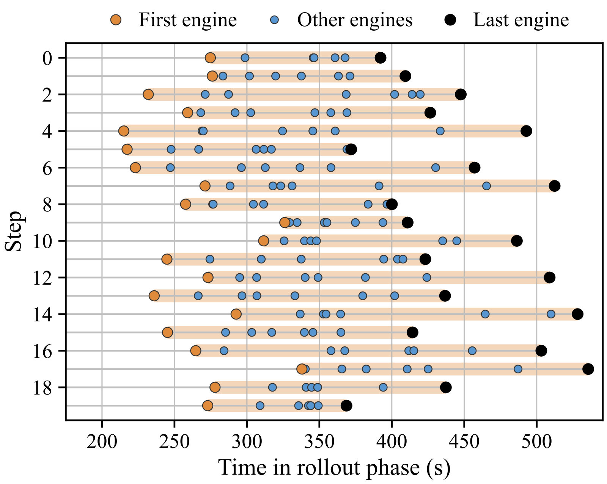
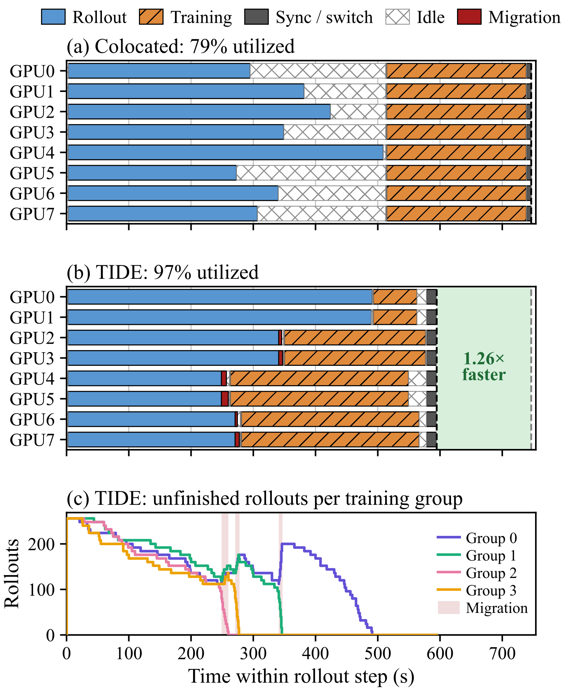
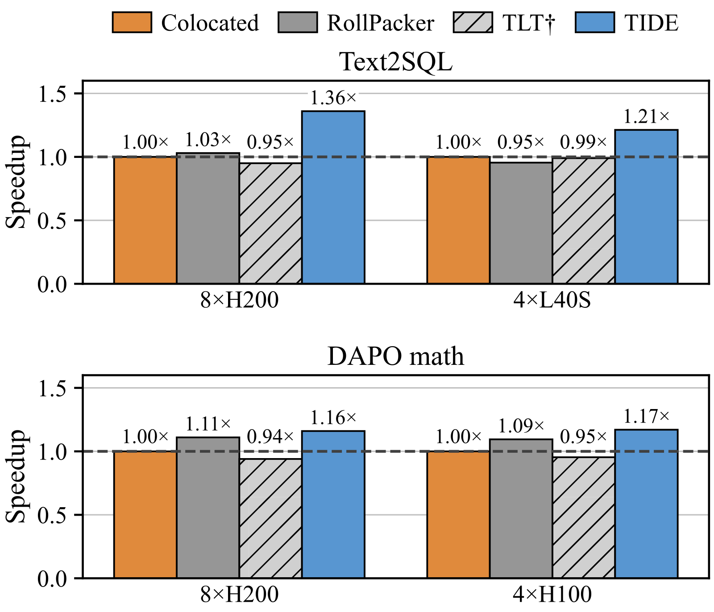

先做完的卡只能空等最长的那几道题：TIDE 怎么收回这段空转你在八张 H200 上做一轮 on-policy 强化学习。先用当前权重让模型做一批数学题，再拿这批作答来更新模型。这里的 on-policy，就是训练用的样本必须来自此刻的权重。
八张卡共用同一套硬件，先一起做推理，全部做完后再一起训练。这种推理和训练抢同一批 GPU 的做法，叫共置。用当前权重生成一整条作答，叫一次 rollout。可题目长短差得很远。DAPO-Math 是一条数学推理任务，一次作答最长可以到 3.2 万个 token，论文里实际见到的最长是 2.8 万，中位数只有 6,000。
于是先做完的卡只能空等。论文抽了其中一步：共置执行时，这一步有 20.8% 的 GPU 时间在空转，整步跑了 746 秒。还在解码的卡也不好过，做完的请求越来越多，剩下的 batch 越来越小，吞吐跟着往下掉。
这篇论文来自华盛顿大学、布朗大学、加州大学伯克利分校和纽约大学，要解决的就是同步共置的 on-policy RL 里，长尾 rollout 把 GPU 空出来却用不上的问题。现有做法在推理和训练之间设一道屏障：全部 rollout 结束，整个集群才进入训练，这样能保证训练样本来自当前权重。训练系统 TIDE 把这道屏障挪到权重更新之前。已经做完的 rollout 可以先算梯度，只要优化器步进、梯度裁剪这类整批操作，等全部梯度攒齐再做。它做两件事：把空出来的 GPU 改去做训练，并把还没跑完的请求迁到更少的推理引擎上，把解码的 batch 重新做大。在 Text2SQL 和 DAPO-Math 上，硬件从 8×H200 到 4×L40S，相对同步共置最高到 1.36×；达到最优的份额，TIDE 做到 77.2% 到 97.4%。
要保持 on-policy，屏障只需加在权重更新之前；评测目前都在单机上。
共置同步时，空等从哪来
论文在 8×H200 上跑了 20 步 DAPO-Math，每一步里空等都会出现。最先结束的推理引擎和最后结束的引擎都差出一大截。先完成的 GPU 只能盯着还在跑的长尾请求，自己没法进入训练。

空等只是浪费的一半。另一半发生在还没做完的引擎上：请求陆续结束，解码 batch 越来越小，单卡吞吐从高峰掉到很低。论文把这个叫低效解码。
这两项加在一起相当可观。在 8×H200 的 Text2SQL 上，空闲占到总运行时间的 30.0%，低效解码再贡献 9.8%，再加上换阶段开销 3.6%。同一硬件上的 DAPO-Math：空闲 15.2%，低效解码 8.4%，换阶段 1.3%。这里的最优，指假定训练已经打满，推理按「单卡尽量保持大批次」测出的 GPU 时间，再加上实际的训练 GPU 时间和权重同步时间。达到最优的份额，就是这段最优 GPU 时间占该步实际总 GPU 时间的比例。论文把三项损失和这份份额加起来等于 100%，所以 Text2SQL 只剩 56.6%，DAPO-Math 还剩 75.1%。
这说明屏障保证了 on-policy，也把先完成的卡和变瘦的 batch 一起锁在了推理阶段。
屏障可以加在权重更新前
已经做完的 rollout 先拿去算梯度，会不会把 on-policy 打破？只要优化器还没步进，模型权重就还没变。TIDE 把优化器步进，以及梯度裁剪这类对整批数据一起做的非线性操作，都推迟到全部梯度攒齐之后。训练可以提前开始，权重更新仍然发生在全部样本到齐之后。
空出来的卡立刻改做训练，还不够。先完成的引擎各自把 GPU 交出去，剩下的引擎仍在用很小的 batch 啃长尾；训练侧如果只是谁空了谁来抢活，晚到的长样本还容易堆在同一份副本上。TIDE 因此做第二件事：把还没跑完的请求迁到更少的推理引擎上。触发迁移时，系统会打断进行中的 rollout，只把已经生成的 token 发给当时负载最低的引擎，不搬 KV cache，也就是推理时为已生成 token 存下的中间状态。论文说这样更简单，效果和搬 KV cache 一样，但没有写接收端如何恢复解码状态，也没有单独报这笔开销。留下的引擎 batch 会重新变大，腾出的 GPU 也可以改去做训练。
什么时候迁，由阈值 B 决定。某台推理引擎上剩下的 rollout 数落到 B 以下，就把请求迁到当前负载最低的引擎，并把腾出的 GPU 改去做训练。B 过大，训练侧会因为还没攒够样本而挨饿；B 过小，推理侧会在小 batch 上耗太久。阈值会跟着训练侧是否挨饿调整，步内再用 KV cache 容量做一次否决。 Hoot 说
正文走了一遍 8×H200 上某一步的三次迁移，没有走阈值怎么改。论文默认从 B=8 起，每步固定加减 8。下面 KV cache 占用的百分数是示意，用来把步内否决算一遍。
剩余 rollout 数落到阈值以下 → 检查迁出和接收的 KV cache → 否决则跳过这次候选迁移并下调阈值，后续仍按新阈值和容量检查决定是否再迁 / 通过则迁移并改做训练 → 整步结束按是否挨饿再调阈值
- 剩余 rollout 数 → 阈值 B某台推理引擎上剩下的 rollout 数落到 B 以下，才触发检查。默认第一步从 B=8 起，因为过早迁移会让训练挨饿，比过晚更糟。剩余 8 ≤ B=8，触发检查
- 迁出 KV + 接收 KV → 否决步内先看两端 KV cache 占用之和，超过 100% 就跳过这次候选迁移，并把 B 减掉一个步长，避免把接收端挤满。后面的引擎仍按新的 B 和容量检查决定要不要迁。60% + 50% = 110% > 100%，B=8-8=0，这次候选不迁
- 训练是否挨饿 → 下一步的 B整步结束后再调一次：任一训练 GPU 挨饿则 B 减 8，否则加 8。本步没有挨饿，否决已把 B 打到 0，于是下一步仍从 8 起。0+8=8
- KV 之和未超 100% → 迁移并改做训练下一步剩余再次落到 8。两端是 40% 和 50%，加起来 90%，不超过 100%，于是迁到负载最低的引擎，并把腾出的 GPU 改做训练。40%+50%=90% ≤ 100%，迁移发生
- 未挨饿 → 阈值上调整步结束仍没有训练挨饿，B 加 8 变成 16。下一步会在剩余 16 条时就触发检查，迁得更早。8+8=16
论文 Figure 6 在 DAPO-Math 的某一步上比较了不同的固定阈值：迁得太早，训练会空等；迁得太晚，推理会欠利用。控制器从保守的 8 起步，就是先避开过早这一头。

出处
论文 §4.1.1、§4.1.2、Algorithm 1、§6.1（默认 B0=8、ΔB=8）迁移还得看训练后端能不能立刻用上腾出的卡。论文在内存充裕的 8×H200 上用 Megatron，张量并行度 TP=2，一个训练引擎必须两张卡绑在一起算，只空出一张卡组不成训练组。在内存紧张的 4×H100、4×L40S 上用 FSDP，也就是把模型参数切到多张卡上的数据并行；加一张卡要重新分片，邻近的几次迁移可以捆成一次重配置，少停几次。
训练侧由 Train Router 分活。步初每次下发 64 条 rollout；剩余变少以后，每次最多下发剩余量的四分之一。全程用小批次，每批都有固定开销，反而更慢；完全不管负载，晚到的长样本又会堆在同一份副本上。
走一遍：8×H200 上的某一步
下面按论文 Appendix A 的数字算一下这一步。任务是 DAPO-Math，硬件是 8×H200。推理阶段每台引擎占用 1 张卡，一共 8 台引擎；训练用 TP=2，会变成 4 个数据并行组。开头已经看到，共置时这一步空闲占 GPU 时间的 20.8%，整步是 746 秒。
第一步，看共置怎么走完这一步。八张卡都先做 rollout，谁先完成谁空等，直到最后一台引擎结束，再一起切到训练。先完成的卡在这段时间里什么也做不成，图上这一步的利用率是 79%。
第二步，TIDE 在 249 秒触发第一次迁移，把 80 个还没做完的请求搬到当时负载最低的引擎上，并把腾出的 GPU 改去做训练。因为 TP=2，一次要空出能立刻加入训练的一组卡，单张卡组不成训练组。这些卡随后就可以处理已经做完的 rollout，权重仍然要等到全部梯度攒齐才更新。
第三步，271 秒再迁 80 个请求，341 秒再迁 88 个。长尾被集中到更少的引擎上，用更大的 batch 解码。每台仍在工作的引擎，解码吞吐从 2,766 升到 2,897 tok/s。这样，尾部不再由八台引擎各自啃只剩几条的请求。
第四步，空闲因此降到 GPU 时间的 3.2%。按处在推理模式的全部 GPU 时间来算，rollout 花费从 1.14 GPU-hours 降到 0.80 GPU-hours。这一步从 746 秒降到 595 秒，图上标的是 1.26×。剩下的空闲里，很大一块来自训练组在等最慢的那几份样本算完。

这组数字能说明，在这一步里，改做训练和迁移是一起起作用的：迁走请求既抬高了留下的引擎的解码 batch，也让腾出的卡更早进入训练。它说明不了每项改动各自贡献了多少，因为这里没有把它们拆开。
论文也给了整段 20 步的统计，说明空闲从 15.2% 降到 4.8%，处在活跃解码的 GPU 时间从 15.48 GPU-hours 降到 14.82 GPU-hours，少了 4.3%。这些数字来自整段运行，不是由上面这一步推出来的。
论文另外做了一组消融，在 DAPO-Math 上逐项加上这些机制。改做训练，就是推理引擎一做完就把 GPU 交给训练；负载均衡由前面的 Train Router 来做；迁移是在剩余请求数落到阈值 B 以下时，把长尾并到更少的引擎上；KV veto 是步内的保险，如果迁出引擎和接收引擎的 KV cache 占用加在一起超过 100%，这次先不迁。消融换了一组不同长度的 rollout，表里的秒数不能跟上面的 746 秒、595 秒直接比。
| 在上一行上再加 | 8×H200 秒/步 | 4×H100 秒/步 |
|---|---|---|
| 共置 | 689.1（1.00×） | 1142.6（1.00×） |
| 改做训练 | 666.8（1.03×） | 1025.5（1.11×） |
| 训练侧负载均衡 | 617.9（1.12×） | （已含在上一行） |
| 迁移 | 572.5（1.20×） | 1052.4（1.09×） |
| KV veto | 576.9（1.19×） | 1002.9（1.14×） |
（数字来自论文表 3。4×H100 用 FSDP，分活本身就带中心装箱，所以「改做训练」那一行已经包含负载均衡。）
在 8×H200 上，只改做训练几乎没把步时间打下来，因为步末大批次会让训练负载不均；加上 Train Router 的负载均衡，才到 1.12×。再加迁移，步时间从 617.9 秒落到 572.5 秒，到 1.20×，说明把长尾并到更少引擎上，能比干等每台引擎自己排空更早腾出卡。8×H200 上引擎显存宽裕，加上 KV veto 几乎没有增益，1.19× 和 1.20× 差不多。4×H100 显存更紧，不加这道否决时，迁移反而比只做负载均衡更慢，1.09× 对 1.11×；加上之后才到 1.14×。这张表能说明各项机制在两组硬件上各自往哪边推，不能当成端到端那组 746 秒、595 秒的分解。
端到端快了多少
相对同步共置，TIDE 在 8×H200 上把 Text2SQL 做到 1.36×、DAPO-Math 做到 1.16×；在内存紧张的 4×L40S（Text2SQL）和 4×H100（DAPO-Math）上分别是 1.21× 和 1.17×。Text2SQL 是多轮带工具的任务，一次 rollout 有 1 到 5 轮、每轮最多 3,000 个 token，中间要查 SQL，长度更散，所以共置时 8×H200 上的空闲是 30.0%，对 DAPO-Math 是 15.2%，可收回的空等也更多。

达到最优的份额也上去了。口径与前面相同：份额等于最优 GPU 时间占该步实际总 GPU 时间的比例，三项损失加上这份份额等于 100%，所以共置在 Text2SQL、8×H200 上只剩 56.6%，在 DAPO-Math 上只剩 75.1%。TIDE 把这份份额抬了上去：
| 任务与硬件 | 共置 | TIDE |
|---|---|---|
| DAPO-Math，8×H200 | 75.1% | 87.0% |
| DAPO-Math，4×H100 | 83.2% | 97.4% |
| Text2SQL，8×H200 | 56.6% | 77.2% |
| Text2SQL，4×L40S | 78.4% | 95.1% |
（数字来自论文表 2。正文把 TIDE 的份额写作 77.2% 到 97%。）
论文还比了另外两套系统。RollPacker 也把空出来的 GPU 改做训练，但它一次粗迁移恰好一半 GPU，经常让训练或 rollout 一侧欠利用。TLT 是一套用投机解码加快长尾 rollout 的同步 RL 系统。为了看投机解码最好能有多快，草稿模型改成离线训练，加速比也改成相对它自己关掉投机的运行。投机解码在 Text2SQL 上把尾部解码加快了 64%，在 DAPO-Math 上只打平；再算上切相开销和草稿模型占显存，评测里的四组都比它自己的共置版本更慢。
按逐步看，8×H200 上 DAPO-Math 的全部 20 步、Text2SQL 的 91% 的步都有加速。4×L40S 的 Text2SQL 有的步是持平或更慢，因为 FSDP 加卡要重配置，步又比较短，长尾少的时候，这笔开销会露出来。总体仍然快于共置。
这对做 on-policy RL 训练系统的人意味着什么
要保持 on-policy，不必等全部 rollout 结束才开始训练；把屏障放在优化器步进之前就够了。
如果你已经在共置系统里做同步 RL，先量两笔账：先完成的 GPU 空等了多久，以及 batch 变瘦之后解码掉了多少。只盯着空等，会漏掉还在工作的卡变慢这一截。
如果要让训练提前开始，优化器步进和梯度裁剪要等到全部梯度攒齐。迁移不要做成一次划走一半 GPU。显存紧的时候，先看迁出和接收两端的 KV cache 加在一起会不会超过 100%，超了就把这次迁移按下，否则接收端会被挤满，步时间不降反升。训练侧在步末把批次逐步缩小，避免晚到的长样本堆在同一份副本上。
局限
TIDE-FSDP 为加卡做重配置，总体会多出 2% 到 3% 的开销。
论文预期，在完全异步的 RL 里，两边 GPU 已经更能打满，系统层面的收益会更小。分离部署和一步重叠的异步策略可以借用灵活切分的思路，这些设定没有进入评测。
投机解码可以和迁移一起用，尤其是迁移已经不再划算、batch 已经很小的时候。论文没有把两者合在一起测。
读完这篇，你觉得
夜读鸮记下了，谢谢你的反馈。
点一下即可，无需登录；再点一次撤回。只统计匿名次数，不记录你是谁。
讨论
欢迎补充实验细节、复现经验或不同看法。需 GitHub 登录。
正在加载讨论…